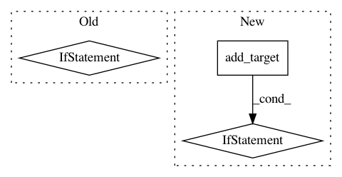

427bd0f33076c2595dceb0dfd5bca00a06f95498,src/python/pants/backend/jvm/tasks/jar_create.py,JarCreate,execute,#JarCreate#,121
Before Change
if self.jar_classes:
self._jar(jar_targets(is_jvm_library), functools.partial(add_genjar, "jars"))
if self.jar_sources:
self.sourcejar(jar_targets(is_jvm_library), functools.partial(add_genjar, "source_jars"))
if self.jar_javadoc:
javadoc_add_genjar = functools.partial(add_genjar, "javadoc_jars")
self.javadocjar(jar_targets(is_java_library),
self.context.products.get("javadoc"),
After Change
jar_name = jarname(target)
jar_path = os.path.join(self.workdir, jar_name)
with self.create_jar(target, jar_path) as jarfile:
if self._jar_builder.add_target(jarfile, target):
self.context.products.get("jars").add(target, self.workdir).append(jar_name)
@contextmanager
def create_jar(self, target, path):
existing = self._jars.setdefault(path, target)
if target != existing:
In pattern: SUPERPATTERN
Frequency: 3
Non-data size: 3
Instances
Project Name: pantsbuild/pants
Commit Name: 427bd0f33076c2595dceb0dfd5bca00a06f95498
Time: 2014-07-10
Author: john.sirois@gmail.com
File Name: src/python/pants/backend/jvm/tasks/jar_create.py
Class Name: JarCreate
Method Name: execute
Project Name: pantsbuild/pants
Commit Name: a04d2aff116053e679f0a68ef7f25e47f90cf034
Time: 2014-06-13
Author: john.sirois@gmail.com
File Name: src/python/pants/backend/jvm/tasks/jar_create.py
Class Name: JarCreate
Method Name: _jar
Project Name: pantsbuild/pants
Commit Name: b2202480258b6f2f5f4e020e86cde975088c7792
Time: 2015-07-11
Author: codyhgibb@gmail.com
File Name: src/python/pants/backend/jvm/tasks/jar_create.py
Class Name: JarCreate
Method Name: execute